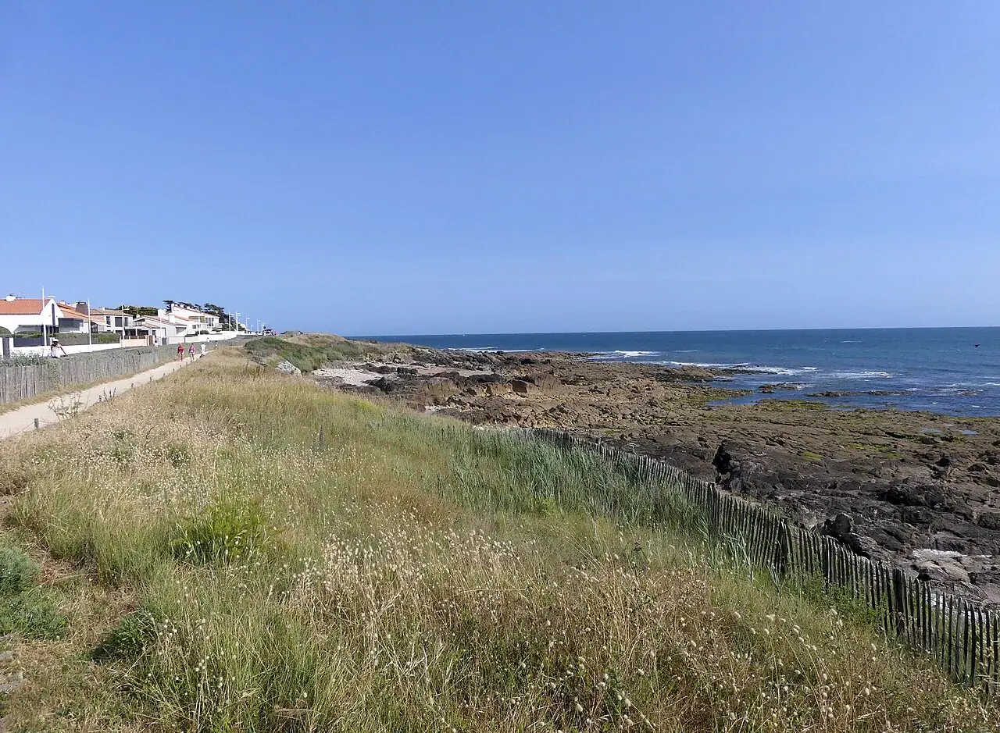

Les Sables-d’Olonne — Tanchet
Vendée, France · surf

Au sud des Sables-d’Olonne, Tanchet borde le lac du même nom. Une plage de surf proche de la ville.
- Lieu
- Vendée, France
- Niveau
- Variable selon les conditions
- Activités
- surf
- Type d'eau
- Mer / océan
- Coordonnées
- 46.48, -1.76 (position approximative du secteur)
Ouvrir dans Ocean Buddy Télécharger sur l'App Store
Source : Ville des Sables-d’Olonne.